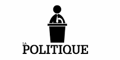

Qui suis-je?
Quelles sont mes ambitions?
Ce en quoi je crois

Je suis un jeune étudiant en troisième année de licence en science de gestion qui souhaite, plus tard, se spécialiser en ingénierie financière dans l'optique de travailler dans un cabinet de conseil et fonder ensuite un fond commun de placement
Je souhaite plus tard, comme déjà dit, fonder un fond commun de placement afin de permettre à tout sénégalais, africain le souhaitant, d'investir dans un secteur donné, dans plusieurs entreprises et selon leurs requêtes spécifiques.
Je souhaite aussi plus tard m'engager en politique, écrire des livres sur la situation macro-économique mais aussi sociétale de mon pays. Je ne souhaite pas forcément un quelconque mandat électif mais tout simplement participer au débat national dans le but d'aider à la prise des meilleures décisions possibles
Economie
Je me considère comme d'obédience libérale
Politique
Je crois foncièrement à la démocratie, au contrôle des pouvoirs publics par le peuple et de l'implication de la société civile dans le bon fonctionnement de l'Etat
Société
Cela peut paraitre paradoxal, mais je crois autant au progrès social qu'au conservatisme dans ce sens où le conservatisme ne serait pas une forme de stagnation, loin de là. Il permettrait de guider le progrès social en servant de ligne de fond, voire base de travail. C'est-à-dire qu'il faut, pour que progrès social il y ait, que l'on sache exactement d'où l'on vient, quelles sont nos cultures, nos normes sociétales, qu'on les applique d'abord et qu'ensuite l'on modernise ce qui se doit de l'être sans pour autant se détâcher brutalement de nos traditions. Oui pour un conservatisme qui rassure, oui pour un progrès social intelligemment organisé.
Suivez-moi sur les différents réseaux sociaux
Facebook